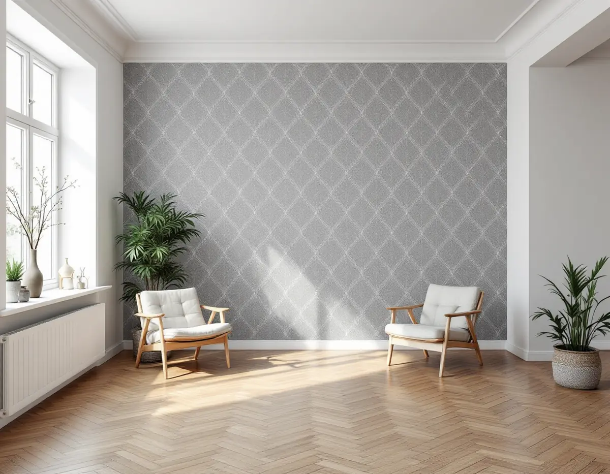
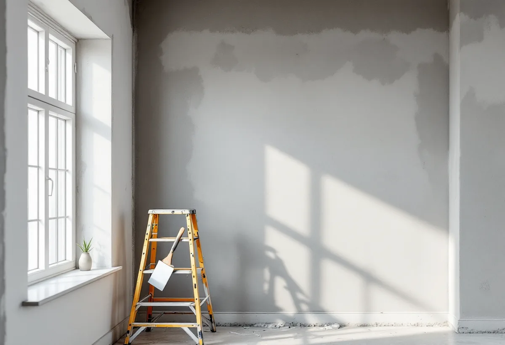
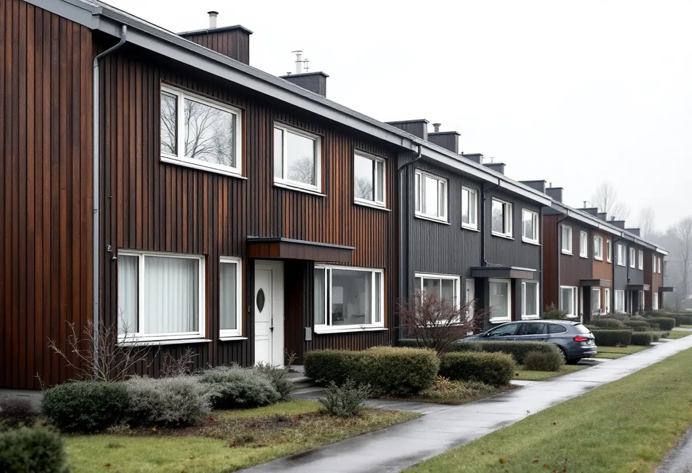

Platsbesök
Gratis besök där vi tittar på väggarna.
Kista byggdes 1975–1980. I hus från den tiden kan väggarna vara av betong, gips eller puts, som Byggnadsvårdsföreningen räknar till de lämpliga underlagen för tapet, men gamla tapetlager och hål behöver åtgärdas först. Geal Entreprenad AB tapetserar i lägenheter och radhus i Kista och anpassar underarbetet efter väggen.

Stadsmuseets Stockholms spår om Kista berättar att stadsdelen byggdes ut 1975–1980 på det gamla militära övningsområdet Järvafältet, med 2 500 lägenheter i flerbostadshus och omkring 780 småhus från början. Stadens områdesfakta för 2025 räknar i dag 7 893 bostäder i Kista: 3 981 bostadsrätter, 2 801 hyresrätter hos privata värdar och 629 i allmännyttan.
Områdesfakta räknar också 1 604 specialbostäder och 721 lägenheter i flerbostadshus utan kök. Det är alltså en stadsdel med många mindre bostäder. Bland lägenheterna i flerbostadshus finns 1 391 tvåor, 1 761 treor och 854 fyror. Stockholms spår nämner också att Kista centrum invigdes 1977. Vi planerar arbetet så att du kan bo kvar under tiden.

Byggnadsvårdsföreningen skriver att lämpliga underlag för tapeter i nya hus är gipsskivor, betong och puts, medan puts, timmer, spänd papp och spänd väv nämns för äldre hus. Väggar av de materialen går alltså bra att tapetsera på, men de behöver vara rena, släta och torra. Vassa korn och toppar från dålig slipning eller orent klister syns mer genom tapeten än åsar och fördjupningar, så underarbetet är det viktigaste.
I ett svar om en 70-talslägenhet där den boende ville ta bort tapeten och låta betongen vara synlig skriver föreningen att betongväggarna inte självklart är så vackra som man tror, och att en opigmenterad silikatfärg kan strykas på så att betongen inte dammar. Vill du tvärtom tapetsera över en vägg som tidigare varit omålad betong spacklar och grundar vi först. Föreningen påpekar också att tapeter kan bukta sig vid uppsättningen, så vi låter varje våd vila och trycker ut luften innan nästa sätts upp.
I en bostadsrätt säger bostadsrättslagen att medlemmen håller lägenheten i gott skick om inte stadgarna säger något annat. Det är alltså stadgarna som avgör vem som ansvarar för väggarnas ytskikt. Tapetsering finns inte bland de åtgärder som lagen kräver styrelsens tillstånd för, så länge den inte är en väsentlig förändring eller påverkar särskilda kulturvärden.
Bor du i hyresrätt ger jordabalken dig rätt att tapetsera på egen bekostnad. Försämrar arbetet lägenhetens bruksvärde kan hyresvärden kräva ersättning, så vi väljer underarbete och tapet som går att ta bort utan att väggen skadas.
Kista har 971 småhus enligt områdesfakta, varav 482 med äganderätt och 404 bostadsrätter. I ett radhus är det du som ägare eller föreningen enligt stadgarna som bestämmer, och arbetet kan omfatta flera rum och våningsplan.
Byggnadsvårdsföreningen skriver att tapeter klarar många underlag, så länge luftfuktigheten inte blir för hög som i kök och badrum. I radhusens kök och badrum föreslår vi därför andra ytskikt än papperstapet. Mer om tjänsten finns under målare i Kista.

Gratis besök där vi tittar på väggarna.
Typ, mönster och antal rullar.
Gammal tapet bort, spackling och slipning.
Där väggen suger ojämnt.
Våd för våd, skarvarna rullas.
Eluttag och lister tillbaka.
Skatteverket räknar tapetsering som rotarbete i både småhus och bostadsrätter. I en bostadsrätt ska arbetet göras innanför lägenhetens tak, väggar och golv och gälla något du ansvarar för enligt stadgarna. Bor du i hyresrätt får du inget avdrag, eftersom det bara gäller bostäder som köparen äger.
Avdraget är högst 30 procent av arbetskostnaden och högst 50 000 kronor per person och år. Tapeter och annat material ger inget avdrag, och Geal drar avdraget direkt på fakturan.
Antal rum och väggytor, hur mycket som ska flyttas undan, hur många lager gammal tapet som ska bort, spackling av hål och skarvar, grundning, tapetens typ och mönster. Efter ett gratis platsbesök får du ett skriftligt kostnadsförslag.
Fasad, fönster och invändig målning.
Målare i Stockholm →Takbyte, takbesiktning och plåtarbeten.
Takläggare i Kista →Låga tak, tätskikt och takbrunnar från 1970-talet.
Takrenovering i Kista →Radhusen, föreningen och ventilationen.
Badrumsrenovering i Kista →Uterum, altan och föreningens tillstånd.
Byggföretag i Kista →Radhus, atriumhus och husgruppen.
Fasadmålning i Kista →Panel, skivor och isolering på radhus.
Fasadrenovering i Kista →Radhus och villor från 1970-talet.
Fönsterbyte i Kista →1970-talets radhusfönster.
Fönsterrenovering i Kista →Nya golv på betong i radhus och lägenheter.
Golvläggare i Kista →Golvslipning i bostadsrätt, hyresrätt och radhus.
Golvslipning i Kista →Småhus i förening och kök från 1970-talet.
Köksrenovering i Kista →1970-talets hus, asbest och ROT.
Målare i Kista →Rännor, stuprör och beslag.
Plåtslagare i Kista →Garderober, väggar och dörrar i lägenheten.
Snickare i Kista →Platta tak och pulpettak.
Takbyte i Kista →